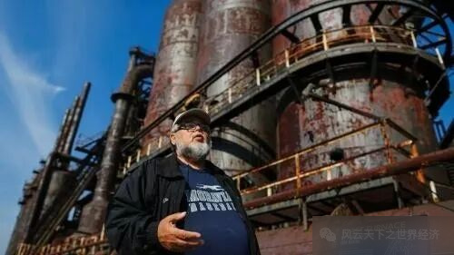
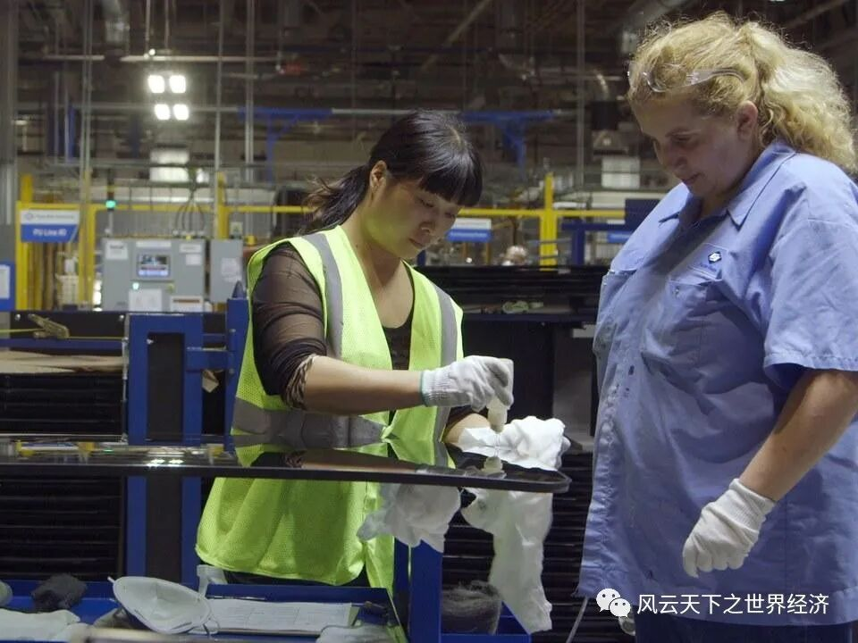
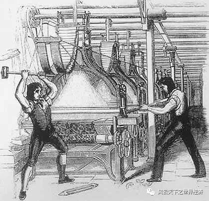

亲爱的Jason：
见字如晤。
最近还好吗？我听说了一则不幸的消息，G.E.Lighting关闭了在比塞勒斯市和洛根县以南的两家工厂，将家用灯泡的生产线转移到中国。我仍然记得，你曾经欢欣鼓舞地告诉我，你担心了许久的朋友Bob终于获得了G.E.Lighting的工作机会，我们当时都喜极而泣，但谁也没想到，本该是工厂建厂八十周年的纪念日，却迎来了关闭的消息。请你一定代我向Bob传达我的关心，虽然我们相距千里，但是我依然牵挂着你们。
我猜想，你现在或许是惶恐不安的。从你过去的来信中，我看到一座座工厂从灯火通明走向无人问津，从加班加点到数日难开工，周围的同事一批又一批地离开，或转行学习新技能，或远走他乡另寻出路，大家都在担心着、害怕着，仿佛有一把悬挂在头顶的达摩克利斯之剑，没有人知道这把命运之剑什么时候会落下，也不知道下一个失业的人会不会就是自己，这种未知的恐惧感令人几近窒息。我在大洋彼岸的中国也在为你祈祷，希望你的工作能够安稳顺利地进行下去。


俄亥俄代州废弃的钢铁工厂
虽然你没有在信中提及，但我想大家对于和中国的贸易或多或少都会有所抱怨，“如果没有这些贸易，美国的公司就会继续在美国开工厂，我们就还会有工作”之类的想法一定是存在的吧。其实我能够理解你们的感受，如果是我的话，也很难做到对转移工厂的公司、对“抢工作”的中国人没有一丝怨言。所以我也想和你谈谈我的一些观点，这样也能让我们更加深刻地了解彼此的想法。
不知你是否观察到，他国的人们借贸易“抢工作”的同时，也带来了新的机会。在自由贸易的条件下，公司们有了更多的选择，为了利润的最大化，他们可能将工厂迁移至任何一个地方，我们可能因此失去生活的来源，但是，自由贸易也让其他国家的企业在美国开工厂成为可能。我看到俄亥俄州中部有家注塑机制造厂，它的北美分部总部设在俄亥俄州，公司总部远在中国广东。这样的例子还有很多，比如中国的玻璃制造商福耀就接管了通用汽车工厂的一处旧址，台积电、富士康和三星等公司都在德克萨斯以及中西部和西南地区建立了工厂。这些又何尝不是新机会呢？我想，你的同学、朋友中说不定就有在这些工厂里工作的。在中国，我们常用“福祸相依”来形容类似的现象，这个词出自古代中国道家学派的著作《道德经》，意思是福和祸是相互联系、相互转化的，福气降临时，祸也离之不远了；灾祸降临时，福气也会悄然到来。就自由贸易而言，它一方面确实带来了“祸”，会让我们的工作面临一定的挑战，另一方面也让“福”降临在我们身边，让我们接触到更多海外的企业和工厂。

俄亥俄代州的福耀玻璃工厂内
对于企业，自由贸易意味着更广阔的市场，反映到我们个体的，就是更多的就业机会。正是有了贸易的存在，英特尔、通用电气、沃尔玛、宝洁等公司才能在世界范围内搭建自己的商业帝国，达到今日如此大规模的体量，成为家喻户晓级的企业。以宝洁为例，1837年，宝洁诞生于辛辛那提市，那时，它还是一个制作肥皂和蜡烛的小作坊，连凑齐几千美元都非常困难。而现在，宝洁已是雇员近10万、经营品牌超过300个、产品畅销160多个国家和地区的跨国公司。可见，自由贸易，意味着无与伦比的全球市场，意味着商业版图扩张的无限可能，意味着对人才的大量需求。
而且，我还发现，除了本土企业向外开疆扩土能带来就业岗位的增加，来自他国的进口也有同样的益处。这听起来和我们的推断大相径庭，毕竟，当工厂迁往别国，就业岗位减少，原本在国内生产的产品也变为进口商品进入国内，怎么会有利于就业呢？但美国战略与国际问题研究中心联合斯坦福大学中国经济和体制研究中心推出的“中国大数据”项目发布的报告指出，2010年至2019年间，来自中国的进口扩大了23%，同期美国的制造业工作岗位也增加了10%。这些数据说明来自中国的进口增加确实未减少美国国内的就业机会，甚至对就业岗位的增加起到了一定的积极作用。
我听说俄亥俄州的参议员 Sherrod Brown称“几十年来错误的税收和贸易政策”将“未来的产品拱手让给了中国”，若将所有的就业问题都归咎于贸易，我不免替贸易申冤，这口“大锅”实在过于沉重。20世纪末，华尔街和硅谷站立在世界经济的潮头，成为万众瞩目的宠儿，而五大湖区的工业城市却逐渐衰退，企业纷纷将工厂转移到中国等发展中国家。那时，世界范围内贸易规模快速增长，全球化浪潮袭来，但信息化的力量同样难以忽视，我们很难判断究竟谁是对俄亥俄州下手的最大“杀手”。你的父母或许就是“眼见他起高楼，眼见他宴宾客，眼见他楼塌了”的一代，他们的心情应是苦涩而无奈的吧。不知他们现在怎么样了？身体还好吗？如果有机会的话，我也希望能够看望他们。
金伯莉·克劳辛，一位研究跨国公司征税的顶级专家，在《开放》这本书中也提到，研究显示，贸易增长最多的年份出现在20世纪70年代，而工资增长迟滞以及收入不平等加剧则出现在此时间段之后，此时所有产业都增加了对高技能劳动者的需求，而减少了对低技能劳动者的需求，这表明注重技能的科技变革很可能是造成上述问题的主要原因。

卢德运动
我想到了19世纪的“内德·卢德将军”。剪毛机禁令废除的那一晚，工人们彻夜难眠，因为工厂主迫不及待地想要用机器、童工代替他们以击垮工人组织、降低自己的劳工成本。最初，他们试图用合法的方式捍卫自己的利益，最终却因为相关法律的废除，无可奈何地走上暴力反抗的道路。这条路注定是崎岖坎坷的，无数人给他们贴上了“冲动”、“愚昧”、“反社会”的标签，精英们站在顶端轻蔑地否定了他们所有的努力。但是，工人们并非排斥新机器、新技能，只要给予公正的待遇，他们甚至是乐意、主动地学习新技术、新器械的。比如，1802年，工人们就曾建议引进机器，帮助被顶替的人寻找新的就业机会，或者对机器制作的毛料抽取一定税费以作失业补贴。其实我们不难发现，无论是19世纪的英国工人，或是20世纪90年代兴起的新卢德运动，还是现在正处于人工智能时代的我们，都从技术进步里真切地感受到了益处，反对新技术、反抗新机器从来都不是我们的目的，我们反对的是躲藏在技术进步现象背后的不顾一切追逐利益的行为，我们担心的是严重的剥削、不公的待遇、式微的话语权……若更公平的分配制度、更全面的劳动者权益保护机制也随着科技的变革而到来，我们不会向机器举起我们的铁锤。
即使没有自由贸易，工厂也很难持续地辉煌。市场经济下，企业家们注定会竭尽所能地降低成本、扩大利润空间，当生产设备老化，当工资水平升高，企业自然会将目光投向效率更高或者成本更低的地区，当没有自由贸易时，这些地区是美国南部和西部的休斯顿、旧金山和洛杉矶，当自由贸易后，这些地区就变成了日本、中国、印度……产业转移是区域经济发展不可避免的结果，即使没有自由贸易，我们也需要面对同样的问题，谴责自由贸易无法从根源上解决问题，并不能让我们走出困境。
作为个人，我们确实很难凭一己之力扭转乾坤，但怨天尤人也不能让我们的生活向好，不如因势利导、顺势而为。“鹰击天风壮，鹏飞海浪春”，雄鹰乘着东风直上天际，鲲鹏借着海浪顺势而起，人也需要迎着时代的浪潮施展抱负。我在思考，或许Bob可以考虑美容美发之类的行业，因为它们不仅几乎不会受到国际贸易的影响，而且近年随着互联网的发展和人们需求的变化而愈发兴盛，或者回到学校学习要求更高的技能，如芯片制造的相关技术，如果他学成归来，将处于各国竞相发展的行业，我相信他一定很快就能找到满意的工作的。当然，如果你愿意走出舒适圈，为以后的工作和生活再拼搏一次，我想结果也不会令我们失望的。
中国有句俗语叫“世上无难事，只怕有心人”，意思是只要我们肯下决心、埋头去做，世界上就没有什么办不好的事情，困难总是可以克服的。现在我把这句话送给你们，让我们一起克服困难，向上攀登。我期待着你的来信，也希望在未来能够有机会带你游览中国，我们可以一起爬上万里的长城，走进宏伟的兵马俑，攀登高耸入云的黄山，品味各具特色的菜系。
顺祝
万事如意
你的中国朋友
2022年11月